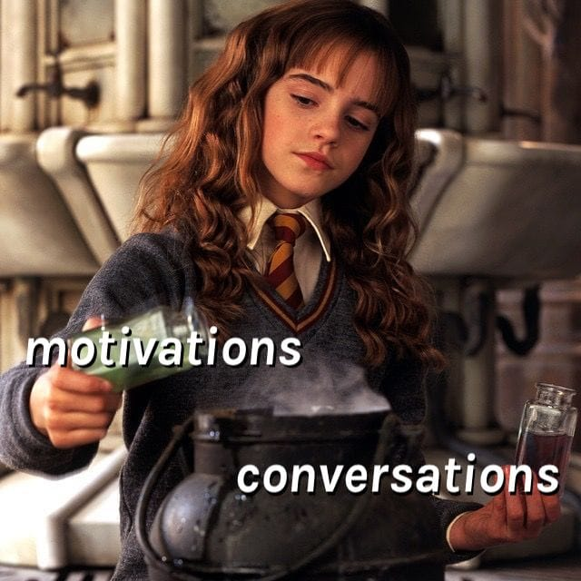

Preparing for a Tech Talk, Part 1: Motivation
December 26, 2018
I’ve done a few tech talks that I think went well.
Sometimes people ask me how I prepare for a talk. For every speaker, the answer is very personal. I’m just sharing what works for me.
This is the first post in a series where I explain my process preparing for a tech talk — from conceiving the idea to the actual day of the presentation:
- Preparing for a Tech Talk, Part 1: Motivation (this post)
- Preparing for a Tech Talk, Part 2: What, Why, and How
- Preparing for a Tech Talk, Part 3: Content
- To be continued
In this post, I will only focus on the first step: why and how I pick a topic. It’s not rich in practical tips but might help you ask yourself the right questions.
What motivates you to give a talk?
Maybe giving talks is a part of your current job. Maybe you want to gain more recognition in the industry so you can land a better job or get a raise. Maybe you’re out there to bring more attention to your hobby or work project.
We’ll call these motivations external. They are about what other people think of you and your work. But if you already had all the respect and money that you wanted, would you still choose to give a talk? Why?
Maybe you find it rewarding to teach people. Maybe you enjoy learning, and giving a talk is a nice excuse to dig deeper. Maybe you want to start or change the conversation about a topic. Maybe you want to amplify or critique an idea.
Such internal motivations aren’t a proxy for another desire like professional recognition. These are the things that have intrinsic value to you. Different people are driven by different internal motivations. It’s helpful to be aware of yours. You can sometimes trace them all the way back to your childhood.
For example, here’s mine:
-
I enjoy sharing ideas that inspire me. Sometimes, an idea transforms the way I think. It opens many doors that I didn’t even know existed. But it’s lonely behind those doors. I want others to join me so that they can show me even more interesting doors inside. For me, a talk is a way to collect, curate, and amplify ideas that I find tasteful. (As a teenager I made mixtapes for crushes with no interest in my music taste. Now I do talks! Life, uh, finds a way.)
-
I enjoy re-explaining things in a simpler way. When I understand an idea, I get a very pleasant feeling — better than eating sweets. But learning doesn’t come easy to me. So when I finally “get” something, I want to share that feeling with the people who are still struggling. I try to remember what it was like before the a-ha moment to help others “make the jump” while watching my talks. (I was also insufferable as a child because I insisted that everyone asks me questions. A talk is a more productive way to channel that energy.)
Combining these two internal motivations gives me a recipe for a personally satisfying talk: share an inspiring idea by re-explaining it in a simpler way.
That is my formula. Yours might be different — think about it! Which talks made you feel in a special way? What are the structural similarities between them? (We’ll discuss the talk structure more in the next posts in this series.)
Giving a talk that’s aligned with your motivations is helpful in several ways:
-
It’s easier to pick a topic. My formula is “explain an inspiring idea and why you should care about it”. I can create talk proposals by applying this formula to any interesting concept that I learned. I’ll always have something to talk about as long as I’m listening to smart people with good ideas that deserve more exposure. There are many other possible formulas — find yours.
-
It’s less scary on stage. I get terrified 30 seconds before the talk but the moment I start talking, I’m in my element. The drive to share an inspiring idea overtakes the fear of being judged or doing something wrong. (Of course, this only works with good preparation which we’ll talk about in the next posts.)
-
It’s more convincing. I can’t phrase it better than Sophie did: if you’re enthusiastic about a topic, you can get the audience to care too. Enthusiasm doesn’t necessarily mean being loud or waving hands. Even if you’re calm, people can feel when there’s an emotional conviction behind a talk. (This is also why we can vibe to a song even if we don’t understand the words.)
There’s one more reason it helps when you’re genuinely excited about a topic. Feeling that you’re a part of something bigger does wonders for confidence.
My talks aren’t about me — they’re about an idea, and I’m just a messenger. Thousands of people on the livestream and in the audience aren’t really there to judge me (even if they think so). They came to experience the idea that I brought to share. My role is just to be a conduit from one mind to another. A lot of nerves and pressure from the talks disappeared after internalizing this.
Finding a formula that’s consistent with your motivations helps you establish your own voice. But how do you find a specific topic to which you can apply it?
In my experience, good talks start as conversations. Somebody explains an idea to me, and then I try to explain it to someone else. I talk about it to a dozen people, and eventually I find explanations that “click”. Sometimes there’s a thought that seems neglected or misunderstood, and I try to get individual people to see it in a different light.
For me, a talk is just a way to generalize those conversations and make them one-to-many rather than one-to-one. It’s like a “library” you extract out of the “application code” of many in-person and social media conversations.
So if you want to give a great talk, talking to people is a good way to start.

In this post, I described the framework that I find helpful for thinking about talk ideas. Again, I want to emphasize I’m just sharing what works for me — there are many kinds of talks and your outlook on this may be very different.
In the next posts in this series, I will talk about preparing the talk outline, slides, rehearsing the talks, and what I do on the day of the presentation.
Next in this series: Preparing for a Tech Talk, Part 2: What, Why, and How.